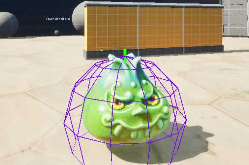
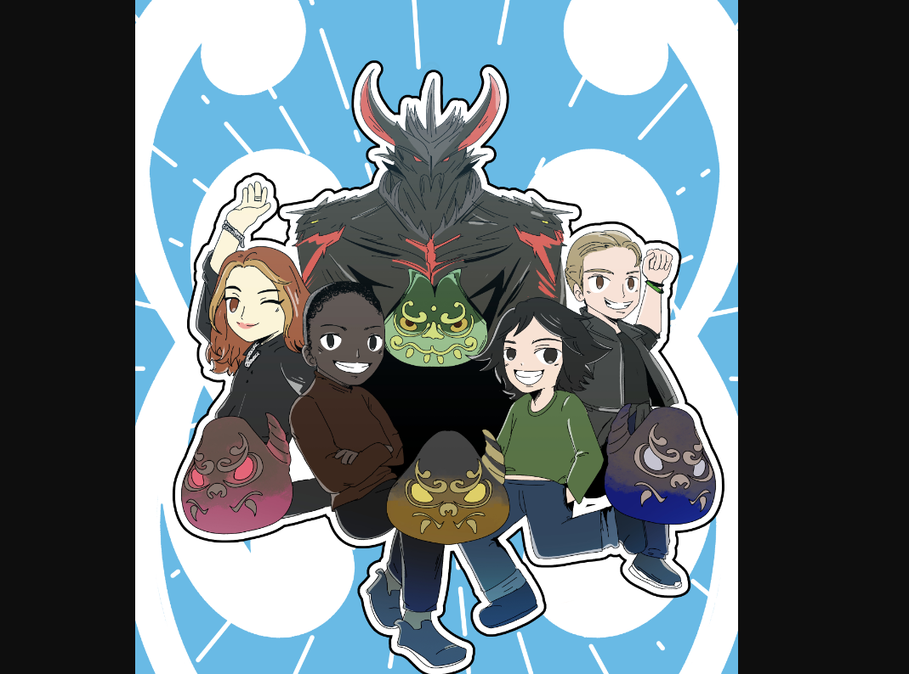

Battle Of Goo
Created for the Game Maker’s Toolkit Jam 2024, our team of five (three programmers, two artists) developed this game in four days using Unreal Engine 5.4.
The game was designed around the jam’s theme, "Built to Scale" featuring a core mechanic where the player’s size changes based on health.
Players grow by eliminating enemies and collecting health pickups but shrink when taking damage.The goal is to survive long enough to face the final boss—a larger, stronger version of the regular enemies.
My Contributions to Battle Of Goo
UI System – Designed seamless transitions between scenes and levels.
Controls Menu – Implemented a menu displaying basic game controls.
Options Menu – Added graphical settings for window mode and visual quality adjustments.
Credits Menu – Created a screen showcasing all contributors.
Development Highlights

